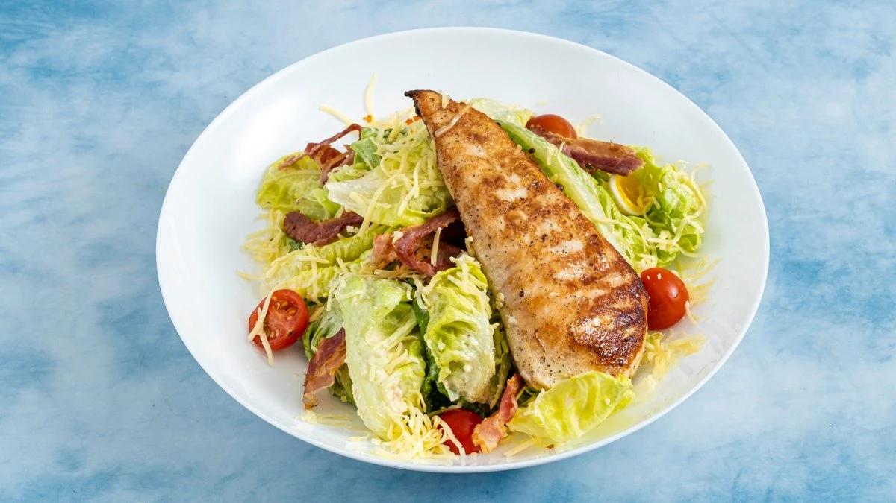

NAMŲ VIRTUVĖ · KAUNAS
Skanu.
Kaip namie.
Pažįstami patiekalai, šiltas maistas ir laikas sau tarp dienos darbų.

VAIŠĖS ŠVENTEI
Jūs kviečiate. Mes ruošiame.
Vaišes galime ruošti kavinėje arba jūsų pasirinktoje vietoje. Papasakokite apie progą, svečių skaičių ir norimus patiekalus — dėl užsakymo susitarsime individualiai.
Pasiteirauti telefonuIŠ ARČIAU